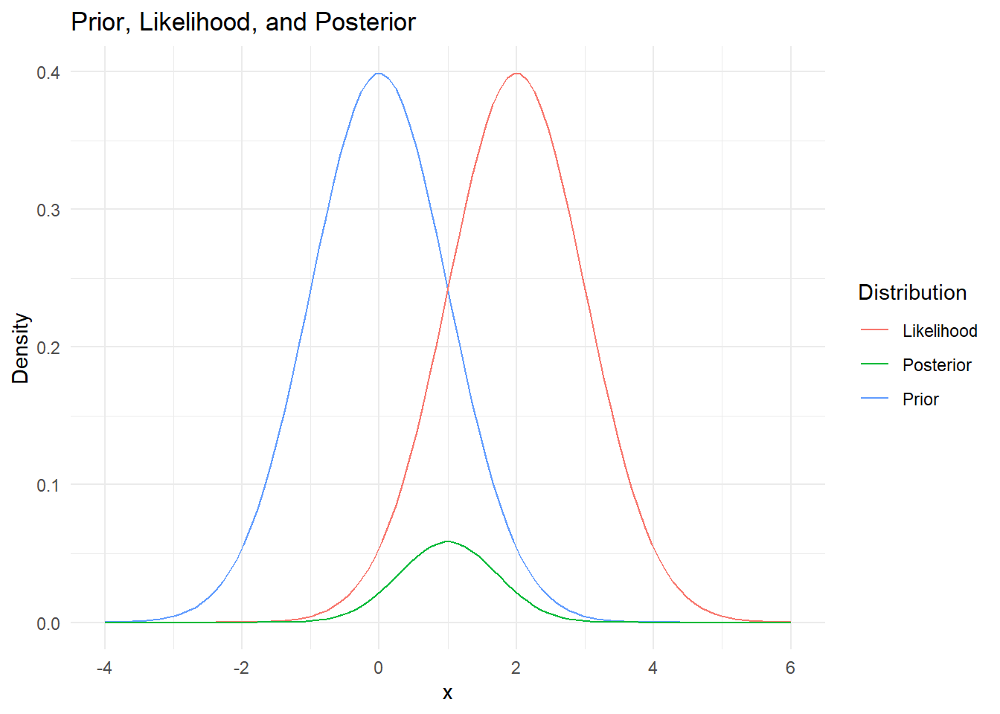

Chapter 6 Bayesian Statistics
Bayesian statistics involves updating our beliefs in the light of new data as stated by the Bayes’ theorem. Moreover, RVs are assumed to follow some probability distribution in the framework of Bayesian statistics, hence such approaches are also called probabilistic.
In the following we look at the main building blocks for Bayesian inference: Likelihood, Prior, and Posterior
6.1 Likelihood
The likelihood in both Bayesian and Frequentist analysis represents how probable the observed data is given certain values of the model parameters:
\[ \text{Likelihood} = L = P(Data | Parameters) \]
6.1.0.1 Example: single data point of Gaussian distributed RV
Assume that the data follows a Gaussian distribution, i.e. \(P=N(x|\mu,\sigma)\) and we observe a single data point. The likelihood of observing a data point \(x\) given a Gaussian distribution with mean \(\mu\) and standard deviation \(\sigma\) is then simply:
\[ P(x | \mu, \sigma) = N(x|\mu,\sigma) = \frac{1}{\sqrt{2\pi\sigma^2}} e^{-\frac{(x-\mu)^2}{2\sigma^2}} \]
# Single data point
x <- 4.5
# Mean and standard deviation of the Gaussian distribution
mu <- 5
sigma <- 1
# Calculate the likelihood
likelihood <- dnorm(x, mean = mu, sd = sigma)
print(likelihood)## [1] 0.35206536.2 Maximum Likelihood Estimation
Maximum Likelihood Estimation (MLE) is a method (in Frequentist statistics) to estimate the parameters that maximize the likelihood function. In the example above, this would be \(\mu\) and \(\sigma\) (if they weren’t given).
6.2.0.1 Example: MLE for Linear Regression Model
Let’s revisit linear regression. Of course, this problem can be solved using the least-squares estimator. However, it is an instructive example for MLE.
A linear regression model can be expressed as:
\[ y_i = \beta_0 + \beta_1 x_i + \epsilon_i \]
where \(y_i\) is the response, \(x_i\) is the predictor, \(\beta_0\) and \(\beta_1\) are coefficients, and \(\epsilon_i\) is the error term.
If the latter is a Gaussian error term, the probabilistic formulation of the likelihood is:
\[L(\beta_0, \beta_1, \sigma^2) = \prod_{i=1}^{n} P(y_i | \beta_0, \beta_1, \sigma^2) = \prod_{i=1}^{n} N(y_i | \beta_0 + \beta_1 x_i, \sigma^2) \\ = \prod_{i=1}^{n} \frac{1}{\sqrt{2\pi\sigma^2}} \exp\left(-\frac{(y_i - (\beta_0 + \beta_1 x_i))^2}{2\sigma^2}\right)\]
Here:
\(L(\beta_0, \beta_1, \sigma^2)\) is the likelihood of the parameters \(\beta_0, \beta_1\) and \(\sigma^2\)
\(y_i\) represents the observed values.
\(x_i\) represents the predictor values.
\(\beta_0, \beta_1\) are the parameters of the linear model.
\(\sigma^2\) is the variance of the error term.
In order to solve for the unknowns (\(\beta_0, \beta_1\) and \(\sigma\)), an optimization problem needs to be solved: the likelihood must be maximized under variation of the unknowns. Besides using numerical approaches, there exists an analytic solution: after taking the log and deriving the gradient, the least-squares-solution is found - which is to be expected.
The (Frequentist) MLE methods do not require any prior information about the parameters to be estimated. It may be advantageous to use constraints or special starting points for non-linear problems, though.
6.3 Prior
In the framework of Bayesian statistics, all variables follow some probability distribution - even the ones which are to be estimated. Hence, there needs to be an a priori specification of our prior knowledge about these parameters.
This prior distribution hence represents our beliefs about the parameters before observing the data.
6.3.0.1 Example: Unifrom prior for Linear Regression Model
Suppose, we know nothing about the parameters to be estimated in a linear regression problem (see also example above). Then we would choose flat priors, i.e. a constant probability distribution, also called uniform \(U\). In a probabilistic formulation this would be:
- \(\beta_0 \sim U(-\infty, +\infty)\)
- \(\beta_1 \sim U(-\infty, +\infty)\)
- \(\sigma \sim U(-\infty, +\infty)\)
This would mean, that there is nothing known about the parameters a priori. In principle, we would find the same results under this prior as just using MLE. In practice, such a prior would lead to numerical problems due to its unbounded support. In the following, we will explore this topic.
6.4 Posterior
The posterior distribution combines the likelihood and the prior to give updated beliefs about the parameters after observing the data via Bayes’ theorem:
\[ P(\theta | \text{data}) = \frac{P(\text{data} | \theta) \times P(\theta)}{P(\text{data})} \]
- \(P(\theta | \text{data})\) is the posterior distribution of the parameter \(\theta\).
- \(P(\text{data} | \theta)\) is the likelihood of the data given the parameter \(\theta\).
- \(P(\theta)\) is the prior distribution of \(\theta\).
- \(P(\text{data})\) is the marginal likelihood of the data.
Note how the posterior is proportional to the prior and likelihood, indicating the influence of the a priori knwolegde in addition to the data. For given data, the marginal likelihood of the data is a constant.
6.4.0.1 Example: Normal prior and likelihood with resulting posterior
Consider this simple example of a Normal prior and a Normal likelihood. The resulting posterior is then the product of the two.
# Load necessary library
library(ggplot2)
# Define the prior distribution (Normal distribution)
prior <- function(x) dnorm(x, mean = 0, sd = 1)
# Define the likelihood function (Normal distribution)
likelihood <- function(x) dnorm(x, mean = 2, sd = 1)
# Define a range of values for x
x_values <- seq(-4, 6, length.out = 100)
# Calculate the prior, likelihood, and posterior
prior_values <- prior(x_values)
likelihood_values <- likelihood(x_values)
posterior_values <- prior_values * likelihood_values # Not normalized
# Create a data frame for plotting
plot_data <- data.frame(x = x_values, Prior = prior_values, Likelihood = likelihood_values, Posterior = posterior_values)
# Plotting
ggplot(plot_data, aes(x)) +
geom_line(aes(y = Prior, color = "Prior")) +
geom_line(aes(y = Likelihood, color = "Likelihood")) +
geom_line(aes(y = Posterior, color = "Posterior")) +
labs(title = "Prior, Likelihood, and Posterior", y = "Density", color = "Distribution") +
theme_minimal()
6.5 Bayesian inference
Bayesian inference is a method of statistical inference (such as e.g. MLE) in which Bayes’ theorem is used to update the probability estimate for a hypothesis as more evidence or information becomes available. A frequent application is the estimation or inference of parameters given some data. There are however more applications.
In principle there are three options to perform Bayesian inference:
6.5.1 Analytically
There are some simple but relevant cases in which analytic solutions exist. This is especially the case if the prior and the posterior are “conjugate”, i.e. in the same distribution family. See e.g. https://en.wikipedia.org/wiki/Conjugate_prior for a list.
6.5.2 Maximum-a-posteriori (MAP) estimate
This approach is similar to MLE: the parameters of the posterior (containing both likelihood and prior) are varied in such a way that the posterior is maximized. This optimization problem can be solved numerically and can sometimes be the only option to tackle a complex problem. The results is a point estimate, i.e. not a distribution, but a single number for each parameter to estimate.
6.5.3 Markov chain Monte Carlo (MCMC) sampling
Markov Chain Monte Carlo (MCMC) methods are a set of algorithms used in Bayesian statistics to generate samples from the posterior distribution when it’s difficult to sample directly.
6.5.3.1 Concept
MCMC works by constructing a Markov Chain that has the desired distribution as its equilibrium distribution. Through iterative sampling, it approximates the posterior distribution.
6.5.3.2 Steps
- Start with Initial Guess: Begin with an initial parameter value.
- Iterative Sampling: Generate a chain of samples where each sample depends only on the previous one (Markov Chain).
- Convergence: After many iterations, the samples converge to the target posterior distribution.
6.5.3.3 Usage in Bayesian Inference
In Bayesian inference, MCMC is used to approximate the posterior distribution when analytic computation is not feasible. More concretely, the samples produced by the MCMC algorithm are approximately samples from the actual -but unknown- posterior. Hence, this method allows to handle almost arbitrarily complex problems.
In a bit more detail, the concept of MCMC in Bayesian inference is as follows:
Bayes’ theorem as above states \[ P(\theta | \text{data}) = \frac{P(\text{data} | \theta) \times P(\theta)}{P(\text{data})} \]For a fixed set of data, \(P(\text{data})\) is a constant and can be ignored such that :\[ P(\theta | \text{data}) \sim P(\text{data} | \theta) \times P(\theta) \]
The expectation of the unknown parameter(s) under the posterior is then: \[ E(\theta | \text{data}) = \int_{-\infty}^{\infty} \theta \times P(\theta | \text{data}) d\theta \sim \int_{-\infty}^{\infty} \theta \times P(\text{data} | \theta) \times P(\theta) d\theta\]
This integral is typically not analytically tractable. Besides potential MAP algorithms, MCMC provides a convenient method to handle this integral. MCMC replaces the integration with a sum of samples from the Markov chain, which are (approximately) distributed like the posterior:
\[ E(\theta | \text{data}) \sim \int_{-\infty}^{\infty} \theta \times P(\text{data} | \theta) \times P(\theta) d\theta \approx \frac{1}{N} \sum_{s=1}^{N} \hat\theta_{i}\] Here, \(N\) samples \(\hat\theta_{i}\) are drawn by the MCMC algorithm.
6.5.3.4 JAGS
Such MCMC algorithms are provided for example in JAGS (“Just Another Gibbs Sampler”), provided also as R-package rjags.
JAGS requires a txt-file with the model specification: all unknown variables must be specified either as following a probability distribution (e.g. priors for regression coefficients) or as in a analytic relation with another variable (e.g. the mean of a distribution might depend on regression coefficients).
The JAGS language is similar to R and code is typically rather short: only the definition of all variables is required. Interestingly, the order of declarations plays no role, making JAGS a declarative (but not programmatic) language.
JAGS is especially fast if conjugate distributions are used. For example, if a Normal distribution is used, the (prior) distribution of the standard deviation should be conjugate. JAGS uses the inverse of the standard deviation, the so-called precision. The distribution, which the precision follows would then be a Gamma-distribution. If the latter is desired to be wide, the parameters of this distribution must be set accordingly small, e.g. 0.01.
6.5.3.4.1 Example: Logistic regression
Consider this simple JAGS model as an example of logistic regression.
The data Y is specified to follow a Bernoulli distribution with a single parameter p (probabilities are \(1-p\) for \(x=0\) and \(p\) for \(x=1\)). The logit of p is then analytically defined. Note that JAGS allows this formulation for convenience, where only the logit of a variable is defined, instead of the variable itself.
Priors for the two regression coefficients beta[1] and beta[2] are actually very wide, almost uniform, Normal distributions. JAGS does not provide uniform distributions. Hence, this workaround is required. Note that JAGS uses the inverse of the standard deviation (the precision) as parameter in the Normal distribution.
model {
for (i in 1:N) {
Y[i] ~ dbern(p[i])
logit(p[i]) <- beta[1] + beta[2] * X[i]
}
beta[1] ~ dnorm(0, 0.01)
beta[2] ~ dnorm(0, 0.01)
}When JAGS is provided with data (and some parameters), it can be run to provide MCMC samples.
6.5.3.4.2 Convergence checks
Virtually all MCMC methods require a so-called “burn-in” period, where the algorithm adapts to the model and the data. This means, that these first samples must be discarded.
After that, the actual sampling commences and these samples should be usable.
In practice, the number of samples \(N\) needs to be “large enough” such that the approximation of MCMC sampling holds. This can be checked using e.g. the following methods. Note, that typically multiple Markov chains are used for both speed-up (parallelization) and convergence check (often combined with different/random starting points).
6.5.3.4.2.1 Visual inspection
The sequence of samples should look like a “fat caterpillar”, i.e. no drift of the mean and good coverage of the values around the mean.
6.5.3.4.2.2 Gelman and Rubin’s R statistic
If multiple Markov chains are used, Gelman and Rubin’s R statistic can be calculated. It should be below approx. 1.1 for the parameters to infer.
If there are doubts whether these checks are passed, the burn-in and/or sampling length must be increased.